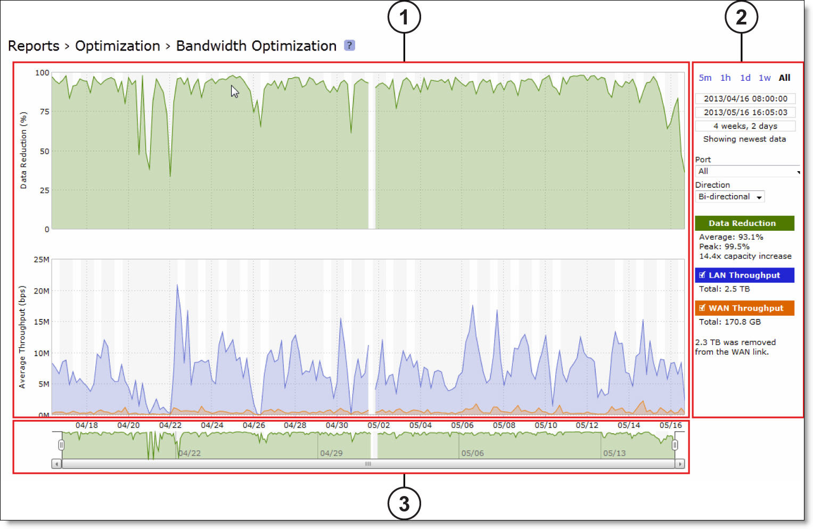

All of the time-series reports are clear, interactive, and easy to navigate. The statistics presented in this report format are readily accessible, and all updates to the report window appear in real time. This section describes the report format in detail.
The time-series report format not only makes data easily accessible, but also enhances your ability to explore data in context. An example of a typical report appears in Figure 10‑1, with the key areas labeled. For details about individual reports, see the report description.
Figure 10‑1. A Time-Series Report 
The plot area is where the data visualization occurs. Reports can display either a single-pane or dual-pane layout. In a dual-pane layout, both panes remain synchronized with respect to the x-axis. Each pane is capable of having two y-axes (a primary one on the left and a secondary one on the right).
The reports present the majority of data series as simple line series graphs, but some reports display area series graphs where appropriate. The types of area series graphs are:
In the original Steelhead appliance reports, one of the most frequently depicted summary statistic is the peak. The original reports do not let you hover over a specific data point to see what the y values and exact timestamp are in relation to peaks. Consequently, the original reports depict peaks with lines and arrows on the graph itself. The new report format lets you hover over individual data points to view this information, eliminating the need to display a peak line or arrows over peaks.
A tool tip displays the timestamp and the value of each data series at that time. The plot area colors the series names appropriately, and the data values have their associated units.
The plot area also displays subtle shading to denote work hours (white background) and non-work hours (gray background). RiOS defines work hours as 8:00 AM to 5:00 PM on weekdays. You cannot configure the work hours.
Use the control panel to control how much data the chart displays, chart properties, and whether to view or hide the summary statistics.
If the current size of the chart window matches any of the links, that link appears in bold black text; the system ignores any clicks on that link. If the time duration represented by any of the links is greater than the total data range of the chart, those links are dimmed.
When the chart window is not attached to the end of the chart, the report replaces the static text with a link that displays Show newest data. Click this link to slide the chart window to the end of the chart range of data and attach the window.
All three text fields validate your input; if you enter text in an invalid format, an error message appears. If you enter valid text that is logically invalid (for example, an end time that comes before the current start time), an error message appears. With all three text fields, if the focus leaves the field (either because you click outside the field or press Tab), the chart window updates immediately with the new value. Pressing Enter while in one of these fields has the same effect.
Below the chart window controls is an optional section of custom, report-specific controls. The custom controls vary for each report. In Figure 10‑1, the Bandwidth Optimization report displays Port and Direction drop-down lists.
When you change the value of a custom control, the system sends a new request for data to the server. During this time, the control panel is unavailable and an updating message appears on the chart. When the report receives a response, the system replaces the chart, populates it with the new data, and makes the control panel available again.
You can hide or show individual data series. When a white check box icon appears next to the data series name, you can hide the series from the plot area.
You cannot toggle the visibility of all series, because it does not always make sense to hide a series (for example, if there is only one data series in the chart). For these series, a white check box does not appear next to the series name. In Figure 10‑1, you can hide the LAN Throughput and WAN Throughput series, but you cannot hide the Data Reduction series.
The legend also displays statistics. Each report defines any number of statistics for any of the data series in the chart. The system bases the statistics computation on the subset of each data series that is visible in the current chart window. The statistics display changes immediately if you change the chart window. The plot area reflects the changing chart window, as do the associated controls in the control panel.
The reports also support non-series statistics (for example, composite statistics that incorporate the data from multiple data series); these statistics appear at the bottom of the legend, below all the series.
Directly above the scroll bar is the navigator, which shows a much smaller and simpler display of the data in the plot area. The navigator displays only one data series.
Use the navigator to navigate the entire range of chart data. The scroll bar at the bottom shows you which portion of the total data range is displayed in the plot area.
The navigator display can appear very different from the plot area display when an interesting or eye-catching series in the plot area is not the series in the navigator.
The charts have a minimum chart window size of five minutes, so if you try to resize the chart window to something smaller, the chart window springs back to the minimum size.
You can also click the data display portion of the navigator (not the scroll bar) and the chart window moves to wherever you clicked.
You can change report default settings to match your preferred style. When you customize any report-specific settings, the system immediately writes them to disk on the Steelhead appliance. The system saves all of your custom settings, even after you log out, clear your browsing history, or close the browser. When you view the report again, your custom settings are intact.
The system saves report settings on a per-user basis. A message appears at the top of each page when multiple users are logged in, explaining that user preferences might be overwritten.
The system also saves the chart window. Whenever you change the chart window, the next time you view any report, the chart window is set to the last chart window used.
Internet Explorer v7.0 and v8.0 must refresh reports every four minutes due to performance issues. Consider using a different browser to view reports.